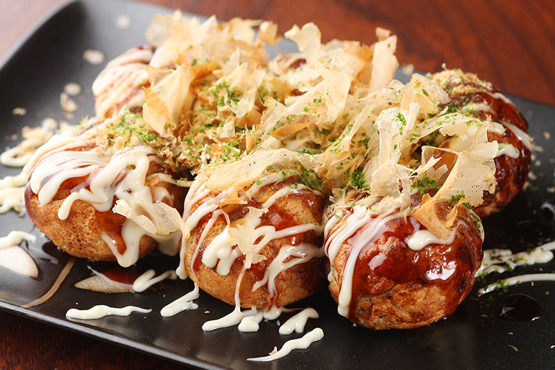
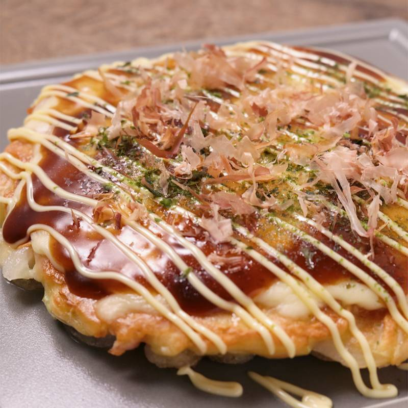

The food in the city is delicious and unique, making the city well known for its cuisine. The most iconic street food in Osaka is called takoyaki (たこ焼き), a flour-based ball battered and cooked in a specialpan.
It is filled with a small piece of octopus ("tako") and can be eaten alone or topped with sauce, mayonnaise, minced green onion and katsuobushi (dried bonito shavings). This ranks high on my list of favorite food, and the original taste can be acquired only in Osaka.
Another famous food is okonomiyaki (お好み焼き), a savory pancake containing various ingredients, such as cabbage, sliced pork, konnyaku (konjac), and nagaimo (type of mountain yam). In Japanese, "okonomi" means "as you like," so there are many types of okonomiyaki. Its toppings are similar to those of takoyaki.
 Despite the city being very modern and full of tall buildings, it preserves nature and history as well.
Despite the city being very modern and full of tall buildings, it preserves nature and history as well.
A thousand years ago, Osaka was the capital of Japan, and the derivations of its old name, Naniwa (なにわ), are still in use for several districts today.
In the late 16th century, Osaka Castle (大阪城) was built by a daimyo named Toyotomi Hideyoshi. Although it has been reconstructed a few times, the castle and its surroundings remain as a historic part of the city. The contrast of the greenery and modern city captivates me, as I can go out and take a walk in the nature one minute and come back to the busy city life the next.

 The stores that surround the city allow people to shop endlessly and always obtain food. There are many large department stores and malls as well, and I can shop all day trying new stores because there are countless options.
The stores that surround the city allow people to shop endlessly and always obtain food. There are many large department stores and malls as well, and I can shop all day trying new stores because there are countless options.